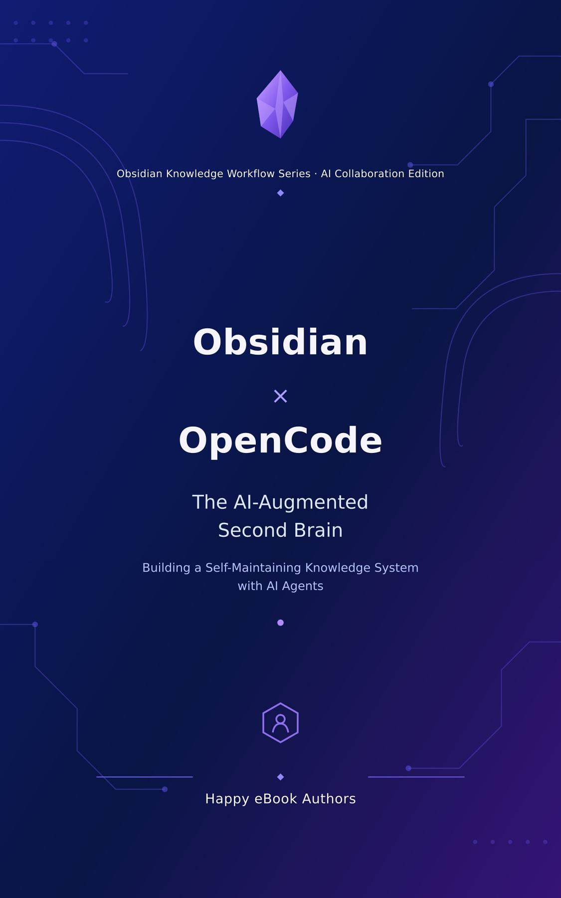

Obsidian × OpenCode: The AI-Augmented Second Brain
Building a Self-Maintaining Knowledge System with AI Agents

Obsidian × OpenCode: The AI-Augmented Second Brain
Building a Self-Maintaining Knowledge System with AI Agents
Build a knowledge workflow that connects Obsidian with OpenCode without handing over your judgment. Obsidian keeps your notes as files you can organize, link, and keep for years. OpenCode can search those files, prepare drafts, and carry out repeatable tasks. You set the goals, define the boundaries, review the evidence, and approve consequential changes. This practical guide shows you how to: - Set up a separate practice Vault and a recoverable backup routine. - Organize folders, filenames, properties, and templates so notes stay findable. - Write clear AGENTS.md rules and configure Skills, Agents, and Commands for bounded work. - Turn quick captures into durable notes while preserving sources and links. - Research across a Vault with citations you can verify. - Develop notes into articles and ebooks through reviewable drafts. - Maintain the workflow with a review routine that survives busy months. Every chapter includes worked examples, copyable file templates, troubleshooting tables, and a short checklist. The emphasis is on small steps, readable files, and explicit approval boundaries: AI can miss context or produce unsupported claims, so every workflow keeps source checks, version history, and human review in the loop. Written for knowledge workers, Obsidian users, and anyone who wants an AI-assisted second brain that they still control.